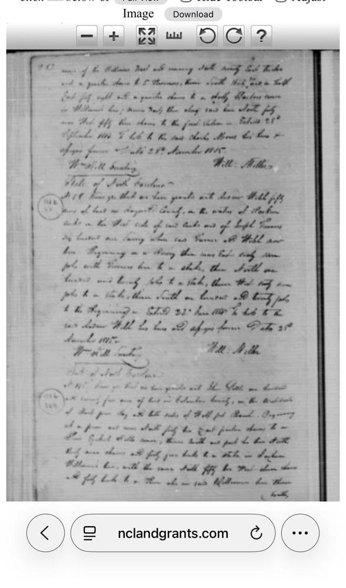

Anno
1735
Geo. II R.
Family Lore, Confirmed
A King's Land, Granted to a Soule
The family story always held that our land in North Carolina traced back to a grant from the English Crown. It turns out that's not embellishment — it's on paper, and it's even better than one grant. Between February and September 1735, Benjamin Soule Sr. (Gen. 10) received three separate Crown Grants in Bladen County totaling 690 acres, all issued in the name of King George II — more than a generation before Benjamin's grandson would help found a country that no longer answered to kings at all.
GranteeBenjamin Soule Sr.
Acreage690 acres (3 grants)
LocationBladen Precinct, NC
DatedFeb 20 & Sept 13, 1735
AuthorityKing George II
RecordFile Nos. 321, 322, 324 (Bladen Co.)

Click to enlarge — NC Crown Grant File No.324 (one of three grants: Nos. 321, 322, 324), Bladen County
One honest caveat for family retellings: these three are the only grants in the record actually issued by the Crown. The later 1758, 1793, and 1815 land patents held by Benjamin's descendants (Gen. 8 and Gen. 9, below) were entered or issued by the sovereign State of North Carolina, after independence — still land, still ours, just no longer the King's to give.
× closeNC Crown Grant File No.324, Bladen County — one of three grants to Benjamin Soule totaling 690 acres, 1735, in the name of King George II.
13
George Soule
c.1601 – 1679
Confirmed · Mayflower 1620
Signed the Mayflower Compact at Cape Cod on November 11, 1620, one of forty-one signers establishing the first framework of self-government in the colony. Servant to Edward Winslow on the crossing; later a landowner and Plymouth Court deputy in Duxbury, Massachusetts. One of 22 lines recognized by the General Society of Mayflower Descendants.
Note on this image: the original 1620 Compact document doesn't survive anywhere — it was lost centuries ago. What's shown here is a widely-circulated commemorative reproduction pairing Bradford's handwritten copy with the 1669 printed version from Morton's New England's Memorial, which lists "George Soule" among the signers (third column) and reproduces a facsimile signature reading "George Soule Senr." A photo mislabeled in the original archive was removed from this spot previously — this replaces it correctly.
12
George Soule II
c.1639 – 1704
Supported
Son of the Mayflower's George Soule, married Deborah, and had eight children. Newly restored to this record — earlier drafts skipped him entirely and connected his son William directly to the Mayflower passenger, which the documented children's list doesn't support.
Both wills survive and connect this generation directly: George Soule's 1677 will names his son "George," and George Soule II's own 1697 will names his "eldest son William" (Gen. 11). Both are transcribed in The Mayflower Descendant, Vol. VII (1905), pp. 210–212 — read the full volume at archive.org. No image of the original wills is in this archive yet.
11
William Soule
c.1671 – 1723
Supported
Grandson — not son — of the Mayflower's George Soule. Married Hannah Eaton in Dartmouth around 1691; the couple raised eleven children there, including Benjamin (Gen. 10).
× closeMayflower Compact 1620 — commemorative reproduction pairing Bradford's handwritten copy with the 1669 printed version from Morton's New England's Memorial. George Soule appears in the printed signer list and in facsimile signature.
× closeDartmouth Quaker Records — Soule family births and lineage.
× closeDartmouth Quaker Records — Soule family lineage, continued.
10
Benjamin Soule Sr.
1698 – 1774
Confirmed · 5 sources
Born in Dartmouth, Massachusetts; married Mary Holway there on October 25, 1721. In 1735 received three Crown Grants totaling 690 acres in Bladen County, NC, under King George II — the land grants behind the family's oldest story, told above. Died in North Carolina in 1774.
× closeNC Crown Grant File No.324 — one of three grants to Benjamin Soule (Nos. 321, 322, 324), 690 acres total, 1735, King George II.
× closeSandwich Vital Register, pp.68–69 — Benjamin Sole of Dartmouth married Mary Holway, Oct 25, 1721.
9
Joseph Soule Sr.
1731 – 1790
Confirmed · 5 sources
Born in Dartmouth January 11, 1731; migrated south and married Helen Ann Cartrette in North Carolina. Held 140 acres in Bladen County by 1758 (File Nos. 1599/1848), and later land in Brunswick County (Patent No.290, entered 1780, issued 1793). Appears in the 1790 census there and died in Brunswick County that year.
Records disagree on his mother's name: the Dartmouth Quaker register names her "Anne," while Benjamin's own marriage record (above) names his wife Mary Holway. One of these is likely a transcription or indexing error — worth checking the original register page.
× closeDartmouth Quaker Register, pp.116–117 — Joseph Soule born Jan 11, 1731.
× closeSoule Birth Register, pp.154–155 — children of Joseph & Mary; Joseph & Elizabeth (1738–1771).
× close1790 Federal Census, Brunswick County, NC — Joseph Soles household; Timothy & Nathaniel Soles nearby.
× closeBrunswick County Deed Book C, p.295 — Patent No.290: Joseph Soles, 153 acres, Seven Creek, Nov 12, 1793 (State of North Carolina grant).
× closeBrunswick County Deed Book — Book 6, Page 295 reference detail.
× closeBrunswick County General Index — Joseph Sowl / Soule / Sauls land records.
× closeBrunswick County Land Records — Sowl/Soule/Sauls entries, continued.
8
Joseph F. Soles
1766 – 1843
Confirmed · 3 sources
Born in North Carolina in 1766, the one son among six daughters. Held two land grants in the newly formed Columbus County (Patent No.146 and No.153, both 1815). Married Elizabeth Ann Simmons — a name later echoed in his descendants' naming patterns. Died in Columbus County in 1843, age 77.
This is the weakest confirmed link in the chain: no will or estate record has yet been found naming Isaiah Soles (Gen. 7) as his son. That document is the single highest-priority item still needed.
× closeNC Land Grant Patent No.146 — Joseph Soule, 50 acres, Seven Creeks, Columbus County, May 8, 1815.
× closeNC Land Grant Patent No.153 — Joseph Soles, 150 acres, Tanners Swamp, Columbus County, c.1815.
× closeNC Land Grant Records — Columbus County patent listings.
× closeNC Land Grant Records — Columbus County patent listings, continued.
× closeNC Land Grant Records — Patent No.153 detail and surrounding grants.
× closeNC Land Grant Records — Patent No.146 and No.153, nclandgrants.com.
7
Isaiah Soles
c.1805 – 1880
Confirmed · 3 sources
Farmer in Columbus County, NC — appears in the 1850 census with wife Tabitha and six children including 18-year-old Joshua. A 1914 death index entry names him as the parent of his son Alva, then about 77. The Cartrette family lived next door in 1850, consistent with (though not proof of) the family's earlier Cartrette marriage.
× close1850 Federal Census, Columbus County NC, p.507 — Isaiah Souls household (Dwelling 501) and Cartrette family (Dwelling 502).
× close1850 Federal Census, Columbus County NC — page header and Isaiah Souls entry detail.
× close1850 Federal Census, Columbus County NC — full page 507.
× closeColumbus County Death Index, Book 1, p.294 — Alva Soles, parent Isaiah Soles, Feb 1, 1914.
× closeColumbus County Death Index — Vital Statistics overview page.
× close1880 Federal Census, Williams Township, Columbus County NC — Soles/Soule households, page 119.
6
Joshua Sowles / Soles
1832 – 1898
Confirmed · 2 sources
Listed at 18 in Isaiah's 1850 household. Served as 1st Lieutenant, 36th North Carolina Troops, CSA, and was taken as a prisoner of war. His military headstone independently confirms his birth and death dates.
× closeMilitary Headstone — Joshua Sowles, 1st Lt., 36th NC Troops CSA, Feb 2 1832 – Sep 27 1898, POW.
5
Manley "Manly" Soles
1875 – 1934
Supported
Killed — stabbed to death — in Tabor City, NC, around 1934. His son Joshua, then thirteen, inherited the estate.
No image in the current archive for this generation.
4
Joshua Soles
1923 – Oct 1999
Supported
Lived his entire life at 59 Fipps Lane, Tabor City, NC. Died at Whiteville Hospital in October 1999.
No image in the current archive for this generation.
3
Danny Soles
b. Sept 6, 1946 — Living
Living
Born on his mother Agnes's 18th birthday. Lives at 3254 Pelligrini Ave, Hope Mills, NC. Father of Karen Soles and Kevin Soles.
2
Karen Soles
Living
Living
Mother of Andrew Bullard. Sister of Kevin Soles.
1
Andrew Bullard
Living
Living
Compiler of this record — the reason all of the above got written down in one place. Father of Lucas Bullard and Olivia Bullard.
Collateral Relatives
Not Direct Ancestors — But Part of the Story
A few names turn up in the record who aren't in the direct line but are close enough to be worth keeping.
Joshua Soles
c.1768 – 1830
Highly Probable
Brother of Joseph F. Soles (Gen. 8), both likely sons of Joseph Soule Sr. (Gen. 9) and Helen Ann Cartrette. An earlier draft of this record mistakenly slotted him into the numbered chain as if he were a direct ancestor — a sibling can't sit between a father and son in a lineage, so he's listed here instead, still documented, just correctly placed.
× close1800 Federal Census, NC District 30A — Joshua Soles listed as household head.
Chadwick Soule & extended land grants
early 1800s, Columbus Co. NC
Context
Chadwick Soule received a 200-acre grant at Bog Branch in 1815 — the same neighborhood as Joseph F. Soles's land. Likely a son of Joseph Soule Sr. born after the family's move to North Carolina, but not yet placed in the direct line. A neighboring 1813 survey also names "Soles corner" as a boundary marker, meaning the family's land was already a fixed local landmark by then.
× closeNC Land Grant Patent No.155 — Chadwick Soule, 200 acres, Bog Branch, Columbus County, Jan 3, 1815.
× closeNC Land Grant Records — Patent No.155 (Chadwick Soule) and No.161 (Duncan / "Soles corner" reference).
× closeNC Land Grant Records — "Soles corner" survey reference detail, nclandgrants.com, 1813.
× closeNC Land Grant Records — patent entries, nclandgrants.com.
× closeNC Land Grant Records — patent entries, continued.
× closeNC Land Grant Records — patent index page.
× closeNC Land Grant Records — patent index, continued.
× close1880 Federal Census, Williams Township — Simmons Soule and Joseph B. Soule households.
× closeColumbus County Death Index, Book 1, p.303 — Morgan Soles entry, May 20, 1914.
Kevin Soles & Justin Soles
Living
Living
Kevin Soles is Danny Soles's other child and Karen Soles's brother — not in the numbered direct line to Andrew Bullard, but part of the same generation. His son, Justin Soles, continues the Soles name into the next generation alongside Andrew's own children, below.
Looking Forward
The Next Generation
Where the record picks back up, going forward instead of back.
Lucas Bullard & Olivia Bullard
Living
Living
Children of Andrew Bullard (Gen. 1) — the newest generation of the Soule line, thirteen generations and over four hundred years from George Soule's landing at Plymouth.